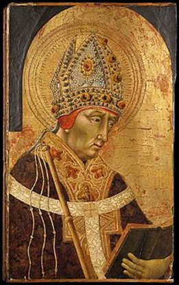
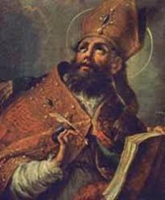

“GOVERNADOR DE MILÃO”
FAMÍLIA 
Ambrósio nasceu no ano 340 de uma eminente família romana, em Trier (em português Tréveris), na Alemanha, situada nas margens do Rio Mosela, que era a Capital da Gália. Seu pai também se chamava Ambrósio e era alto funcionário do Império Romano, Prefeito Pretoriano das Gálias. As Gálias eram uma das quatro grandes divisões do Império Romano, que abrangia os territórios da Grã-Bretanha (com a Inglaterra, Irlanda, Escócia, etc.), Portugal, Espanha e a Gália (França) até a fronteira do Rio Reno. Seus pais tiveram três filhos: Ambrósio, Marcelina e Sátiro. Todavia, em consequência de problemas com sua saúde, o pai faleceu muito cedo, e por isso, sua mãe viúva, mulher inteligente e piedosa, decidiu regressar a Roma com os três filhos, onde passaram a viver.
Sua irmã Marcelina seguiu a profissão religiosa, consagrando sua vida a DEUS, sendo admirada por sua dedicação e demonstração de inquestionável santidade.
Ambrósio e seu irmão Sátiro, se aplicaram nos estudos, e cursaram Direito (Literatura, Jurisprudência e Retórica) em Roma, formando em Advocacia, seguindo o ideal paterno. E pela grande dedicação profissional, logo se destacaram por suas qualidades excepcionais, exercitando os trabalhos de maneira notável e com muita habilidade, numa brilhante carreira como bons Advogados. Ambrósio logo passou a ser Conselheiro do Imperador. Em seguida, o Prefeito Pretoriano da Itália, Anicius Probus, observando as boas qualidades profissionais de Ambrósio, também lhe deu uma posição no Conselho da Cidade, e depois, por volta do ano 372, o elegeu Prefeito Consular (ou seja, Governador) da Ligúria e Emilia, cuja capital era Mediolano (atual cidade de Milão).
O ARIANISMO
Ambrósio foi morar e trabalhar em Milão, como Prefeito Consular, ou seja, como Governador da Ligúria e Emília. E como advogado experiente, logo tratou de supervisionar as instalações de trabalho, ajustando e melhorando as condições das mesmas, e também dando o necessário atendimento às necessidades da capital Milão.
Mas naquela época ocorreu uma divisão no Cristianismo, causada por determinado número de cristãos que acolheram certas heresias, que estabelecia ensinamentos completamente diferentes da doutrina cristã. Estes hereges cristãos simpatizantes e divulgadores da doutrina de Ário eram denominados Arianos. Aconteceu ainda, que o Bispo de Mediolano, Auxêncio de Milão também sendo Ariano, não acolhia as ordens emanadas do Papa, criando um ambiente estranho na Diocese e muita decepção no povo católico. Por essa razão, os cristãos de fato, que praticavam o Cristianismo como JESUS ensinou, passaram a não seguir as ordens do Bispo Ariano de Milão.

A heresia surgiu com Ário que era um presbítero cristão da Alexandria. Ele sustentava com seus estudos mal dirigidos uma visão completamente errônea e antitrinitária, não aceitando a doutrina da SANTÍSSIMA TRINDADE, a qual revela ser o PAI a primeira Pessoa; JESUS a segunda Pessoa, e o ESPÍRITO SANTO a Terceira Pessoa da TRINDADE SANTÍSSIMA. A verdadeira doutrina explica que não são Três deuses, mas UM ÚNICO DEUS em Três Pessoas Divinas, sendo que cada Pessoa possui a mesma Substância e tem idêntica Natureza, ou seja, possui a mesma Essência Divina. É um grande Mistério reservado exclusivamente ao domínio Divino, e a natureza humana não consegue entendê-lo.
O Arianismo defendia a idéia de que JESUS não era um Ser Divino, ou seja, que não era DEUS, mas apenas o FILHO DE DEUS. Afirmava o herege que JESUS CRISTO não tinha a mesma substância de DEUS, que apenas foi criado por DEUS, assim como todas as pessoas foram criadas por DEUS. Desse modo ele negava a eternidade de JESUS CRISTO e não acreditava na encarnação do “Logos” (o VERBO DIVINO). Mas o Concílio de Nicéia no ano 325, com mais de 300 Bispos presentes, fez prevalecer à verdade e condenou a doutrina Ariana, por se tratar de uma abominável heresia.
Em Outubro de 374 o Bispo
Auxêncio de Milão que já estava meio adoentado, faleceu, e então acirrou a
disputa entre Católicos e Arianos para nomear o novo Bispo 
Do meio daquela multidão ergueu-se um grito: “Ambrósio Bispo, Ambrósio Bispo”!
Era uma criança... E por incrível que possa parecer, a voz daquela criança que gritava forte e exigia que ele fosse eleito o Bispo de Milão, foi aumentada por vozes de adultos que também estavam de acordo e ecoaram com brados convincentes no interior da Catedral. Logo as autoridades religiosas que se encontravam presentes, alegres e felizes, fizeram coro, sensibilizando toda a assembléia, que passaram a aclamar numa única voz: “Ambrósio Bispo”.
Ambrósio a princípio meio sem jeito falou:
- “Mas eu sou um pecador!” (Na verdade, Ambrósio não era nem Batizado, era apenas um Catecúmeno que se preparava para receber o Batismo)
- (Em coro responderam) “Não importa, seus pecados caia sobre nós!”
Ambrósio, sério, desceu do púlpito e caminhou para a sacristia, como para se recompor daquela surpresa. Mas, vendo no fundo uma porta aberta para o exterior, fugiu da multidão, saindo sem que ninguém percebesse. Passou na casa de um amigo que o escondeu num bosque próximo a Milão. Mas os cristãos rapidamente foram ao Imperador Romano Valentiniano I, e lhe contaram o fato, rogando-lhe que Ambrósio fosse sagrado Bispo.
O Imperador achou interessante o acontecimento e perfeitamente concordou que aquela eleição de Ambrósio era verdadeiramente “uma manifestação da Vontade de DEUS”. Por isso, autorizou que ele fosse sagrado Bispo. O amigo de Ambrósio foi ao local onde ele estava escondido e descreveu-lhe os fatos. Os outros que acompanhavam também argumentaram com mais explicações sobre o acontecido. Assim, de comum acordo o reconduziram a cidade. Ambrósio já estava compreendendo, que a soma dos fatos ocorridos atestavam a Vontade Divina, e por essa razão, aceitou.
SEU ESTILO DE VIDA
A partir de então, uma
nova vida começou para ele. Decidiu não se casar. Ajudado pelo famoso teólogo Simpliciano
estudou teologia a fundo, e se dedicou inteiramente aos deveres de seu cargo. Leu todos
os escritores cristãos, inclusive os contemporâneos, assimilando de modo
surpreendente os escritos gregos, porque ele também tinha um grande conhecimento
do idioma grego. Especialmente gostava de Origines, mas também simpatizava com
os pensamentos de Philo e Plotinus.
No espaço de pouco mais de uma semana, recebeu o Batismo no dia 24 de Novembro, e no
dia 7 de Dezembro foi Consagrado Bispo de Mediolano (de Milão) com 34 anos de idade.
E logo, como providência necessária, continuou com um profundo e consciente estudo das
Sagradas Escrituras. Aprendeu a fazer homilias, tornando-se um notável teólogo e célebre
orador que divulgava a realidade Divina de modo brilhante, encantando as pessoas, até
o grande e notável Santo Agostinho, que completou a sua conversão graças aos ensinamentos
dele.
Como Bispo, Ambrósio adotou um estilo de vida mais reservado, inclusive distribuiu o seu dinheiro e os seus bens aos pobres. Também doou terrenos e dois imóveis a Igreja. Antes, ele separou uma parte dos seus bens para a sua irmã Marcelina que se tornara Freira Religiosa Cristã e outra para o seu irmão Sátiro. Também foi nesta mesma época que ele escreveu o livro “A Bondade da Morte”.